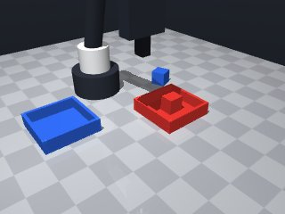

0 demonstrations · reward: gt · perception: vision · 8 practice episodes in 1 rounds
Safety layer: 0 halts, 0 clamps. OpenCV perception: 99% of object sightings, median error 4.11 mm.
| role | model | calls | tokens in | tokens out | USD |
|---|---|---|---|---|---|
| coder | nvidia/Nemotron-3-Ultra-550b-a55b | 1 | 1,818 | 1,516 | $0.0064 |
| summarizer | nvidia/Nemotron-3_5-Lightning | 0 | 0 | 0 | $0.0000 |
| compute | local | 229 s | $0.0000 | ||
| total | 1 | 1,818 | 1,516 | $0.0064 |
- First version: need to pick up each cube and place in matching colored tray - Cubes are 3cm, center at z≈0.015 on table; grasp at z≈0.015 (tool point) to hit middle - Trays have inner half-size 0.044 (8.8cm square), walls 2.5cm high - Approach from above, grasp, lift, move over tray center, lower to just above tray bottom (z≈0.015), release - Must handle perception noise, verify grasp/hold, retry on failure, catch MotionError
--- round_0/skill.py +++ round_1/skill.py @@ -0,0 +1,112 @@ +import math + +def run(robot): + # Get initial scene observation + obs = robot.observe() + objects = obs.get("objects", {}) + fixtures = obs.get("fixtures", {}) + + # Identify cubes and trays by color + cubes = {} + trays = {} + for name, obj in objects.items(): + if obj.get("shape") == "cube": + cubes[obj["color"]] = name + for name, fix in fixtures.items(): + if fix.get("kind") == "tray": + trays[fix["color"]] = name + + # Need both red and blue + if "red" not in cubes or "blue" not in cubes: + robot.log("Missing cubes", cubes) + return False + if "red" not in trays or "blue" not in trays: + robot.log("Missing trays", trays) + return False + + def pick_and_place(cube_name, tray_name, color): + """Pick up cube and place in tray. Returns True on success.""" + max_attempts = 3 + for attempt in range(max_attempts): + try: + # Re-observe to get fresh poses (especially after moves) + obs = robot.observe() + cube = obs["objects"].get(cube_name) + tray = obs["fixtures"].get(tray_name) + if not cube or not tray: + robot.log(f"{color}: object missing from observation") + robot.home() + robot.wait(0.5) + continue + + cube_pos = cube["pos"] + cube_yaw = cube["yaw"] + tray_pos = tray["pos"] + tray_half = tray["inner_half_size"] + + # Approach above cube (z=0.12 safe height) + above_cube = [cube_pos[0], cube_pos[1], 0.12] + robot.move_to(*above_cube, yaw=cube_yaw, speed=0.15) + + # Lower to grasp height (tool point at cube center z=0.015) + grasp_pos = [cube_pos[0], cube_pos[1], 0.015] + robot.move_to(*grasp_pos, yaw=cube_yaw, speed=0.05) + + # Grasp + if not robot.grasp(): + robot.log(f"{color}: grasp failed, attempt {attempt+1}") + robot.move_to(*above_cube, speed=0.1) + robot.wait(0.2) + continue + + # Verify holding + if robot.holding() != cube_name: + robot.log(f"{color}: not holding expected cube") + robot.release() + robot.move_to(*above_cube, speed=0.1) + robot.wait(0.2) + continue + + # Lift up to safe transport height + robot.move_to(cube_pos[0], cube_pos[1], 0.12, yaw=cube_yaw, speed=0.1) + + # Move above tray center + above_tray = [tray_pos[0], tray_pos[1], 0.12] + robot.move_to(*above_tray, yaw=0.0, speed=0.15) # tray yaw doesn't matter for placement + + # Lower into tray: tray bottom at z=0, cube center at z=0.015 when placed + # Tool point at z=0.015 puts fingertips at cube middle + place_pos = [tray_pos[0], tray_pos[1], 0.015] + robot.move_to(*place_pos, yaw=0.0, speed=0.05) + + # Release + robot.release() + robot.wait(0.2) + + # Verify released (not holding) + if robot.holding() is not None: + robot.log(f"{color}: still holding after release") + # Try to shake loose + robot.move_to(tray_pos[0], tray_pos[1], 0.12, speed=0.1) + robot.wait(0.2) + continue + + # Retreat + robot.move_to(tray_pos[0], tray_pos[1], 0.12, speed=0.1) + robot.log(f"{color}: placed successfully") + return True + + except Exception as e: + robot.log(f"{color}: error on attempt {attempt+1}: {e}") + robot.home() + robot.wait(0.5) + + robot.log(f"{color}: failed after {max_attempts} attempts") + return False + + # Process both cubes + red_ok = pick_and_place(cubes["red"], trays["red"], "red") + blue_ok = pick_and_place(cubes["blue"], trays["blue"], "blue") + + robot.home() + return red_ok and blue_ok

import math
def run(robot):
# Get initial scene observation
obs = robot.observe()
objects = obs.get("objects", {})
fixtures = obs.get("fixtures", {})
# Identify cubes and trays by color
cubes = {}
trays = {}
for name, obj in objects.items():
if obj.get("shape") == "cube":
cubes[obj["color"]] = name
for name, fix in fixtures.items():
if fix.get("kind") == "tray":
trays[fix["color"]] = name
# Need both red and blue
if "red" not in cubes or "blue" not in cubes:
robot.log("Missing cubes", cubes)
return False
if "red" not in trays or "blue" not in trays:
robot.log("Missing trays", trays)
return False
def pick_and_place(cube_name, tray_name, color):
"""Pick up cube and place in tray. Returns True on success."""
max_attempts = 3
for attempt in range(max_attempts):
try:
# Re-observe to get fresh poses (especially after moves)
obs = robot.observe()
cube = obs["objects"].get(cube_name)
tray = obs["fixtures"].get(tray_name)
if not cube or not tray:
robot.log(f"{color}: object missing from observation")
robot.home()
robot.wait(0.5)
continue
cube_pos = cube["pos"]
cube_yaw = cube["yaw"]
tray_pos = tray["pos"]
tray_half = tray["inner_half_size"]
# Approach above cube (z=0.12 safe height)
above_cube = [cube_pos[0], cube_pos[1], 0.12]
robot.move_to(*above_cube, yaw=cube_yaw, speed=0.15)
# Lower to grasp height (tool point at cube center z=0.015)
grasp_pos = [cube_pos[0], cube_pos[1], 0.015]
robot.move_to(*grasp_pos, yaw=cube_yaw, speed=0.05)
# Grasp
if not robot.grasp():
robot.log(f"{color}: grasp failed, attempt {attempt+1}")
robot.move_to(*above_cube, speed=0.1)
robot.wait(0.2)
continue
# Verify holding
if robot.holding() != cube_name:
robot.log(f"{color}: not holding expected cube")
robot.release()
robot.move_to(*above_cube, speed=0.1)
robot.wait(0.2)
continue
# Lift up to safe transport height
robot.move_to(cube_pos[0], cube_pos[1], 0.12, yaw=cube_yaw, speed=0.1)
# Move above tray center
above_tray = [tray_pos[0], tray_pos[1], 0.12]
robot.move_to(*above_tray, yaw=0.0, speed=0.15) # tray yaw doesn't matter for placement
# Lower into tray: tray bottom at z=0, cube center at z=0.015 when placed
# Tool point at z=0.015 puts fingertips at cube middle
place_pos = [tray_pos[0], tray_pos[1], 0.015]
robot.move_to(*place_pos, yaw=0.0, speed=0.05)
# Release
robot.release()
robot.wait(0.2)
# Verify released (not holding)
if robot.holding() is not None:
robot.log(f"{color}: still holding after release")
# Try to shake loose
robot.move_to(tray_pos[0], tray_pos[1], 0.12, speed=0.1)
robot.wait(0.2)
continue
# Retreat
robot.move_to(tray_pos[0], tray_pos[1], 0.12, speed=0.1)
robot.log(f"{color}: placed successfully")
return True
except Exception as e:
robot.log(f"{color}: error on attempt {attempt+1}: {e}")
robot.home()
robot.wait(0.5)
robot.log(f"{color}: failed after {max_attempts} attempts")
return False
# Process both cubes
red_ok = pick_and_place(cubes["red"], trays["red"], "red")
blue_ok = pick_and_place(cubes["blue"], trays["blue"], "blue")
robot.home()
return red_ok and blue_ok